How to upgrade eCourt on a Windows Server
Note: It is strongly recommended that a database backup is taken prior to any upgrade.
Open SQL Server Management Studio (SSMS)
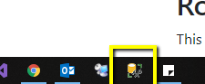Connect to the Server hosting the eCourt database
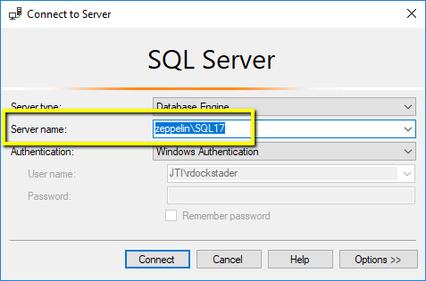Run the Check eCourt Version SQL query
Donwload Query 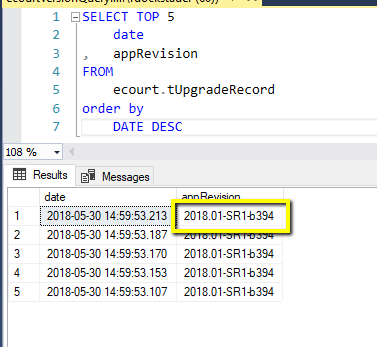Remote to the Web Server hosting eCourt.
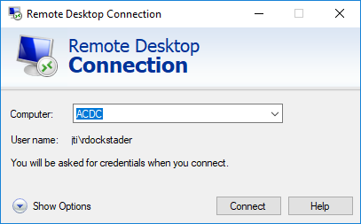Download the new .war file to the desktop of the server. If upgrading to the latest build, find the .war file that matches everything up to -b on the war file name. If upgrading to a more recent version, verify that version is greater then the version that shows in the query.
Note: If this is a local server, these can be found at \\jove\Product_Development\eCourt\WarFiles
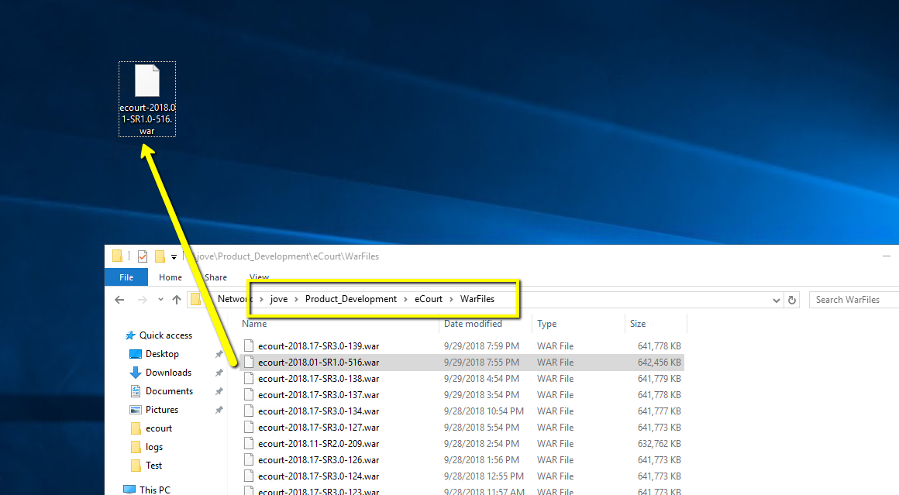Open Services
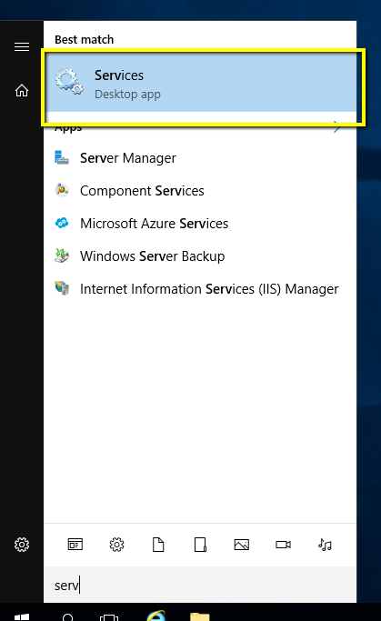stop the tomcat service running the instance of eCourt you're upgrading. (this may take a while)
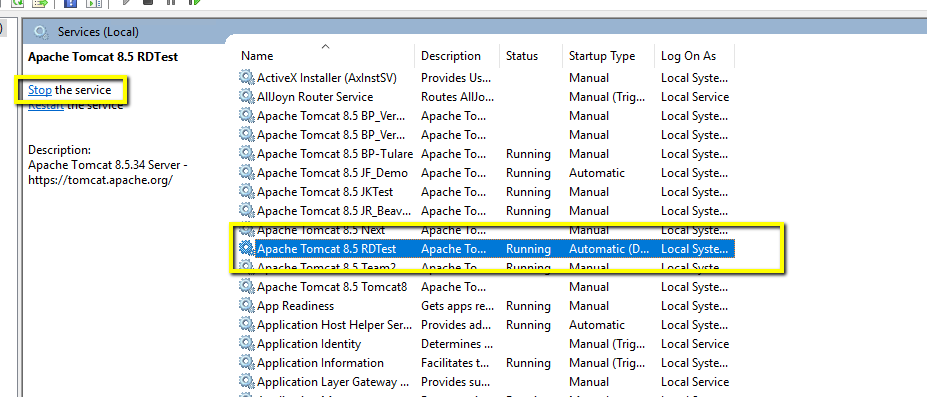Open file explorer and navigate to the bin folder in the Apache Tomcat Install directory for your instance. This can by found by right clicking on the service that was turned off, and selecting properties.
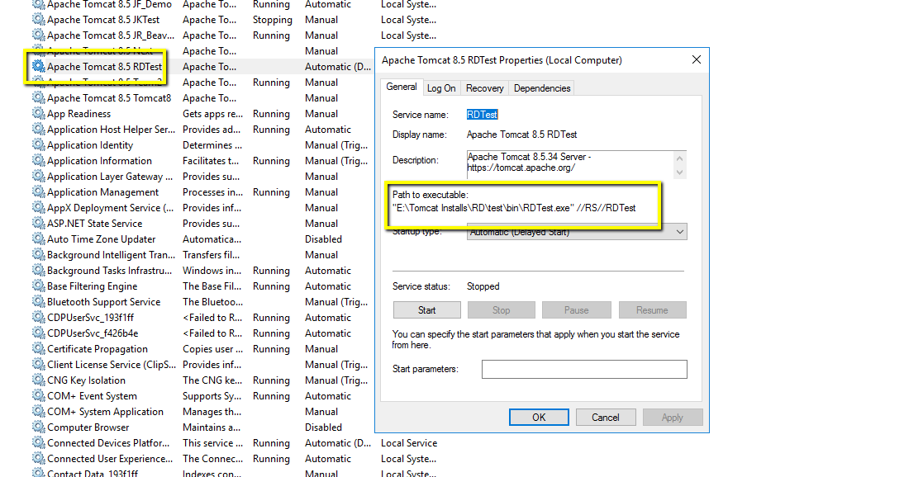Launch the w.exe file. (should be instancenamew.exe. So for an RDTest instance. It would be RDTestw.exe)
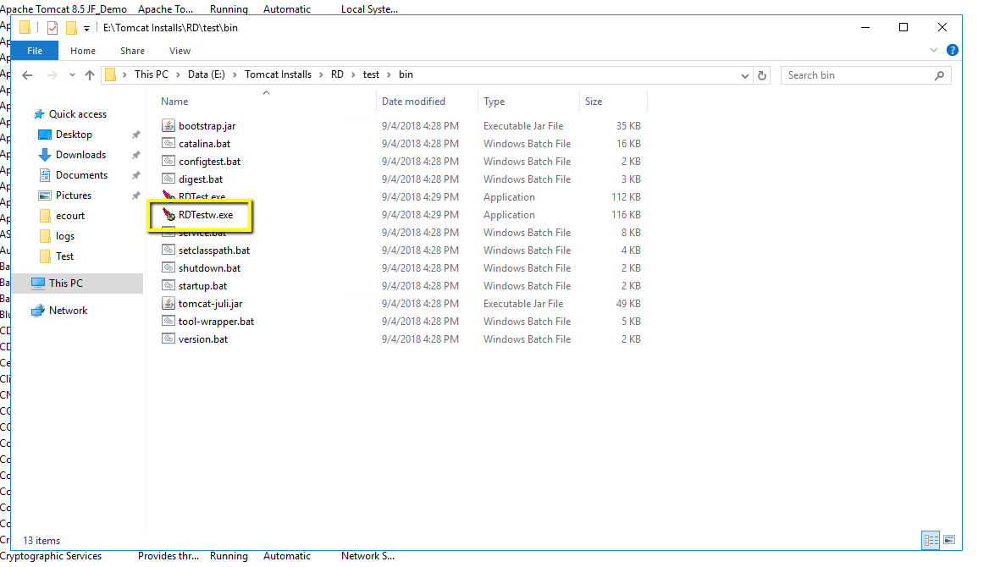Open the Java tab, and Scroll through the-Duser.home property.
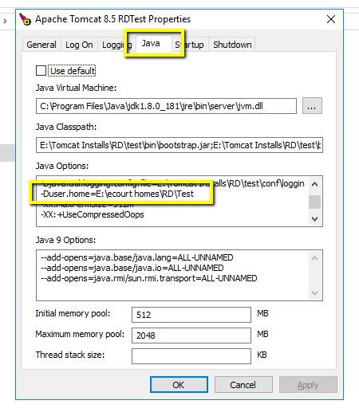Copy the path, open a new file explorer, navigate to the path, and hit cancel on the Apache Tomcat Properties window
Note: Leave the bin file explorer open, as we'll need to be in this directory later.
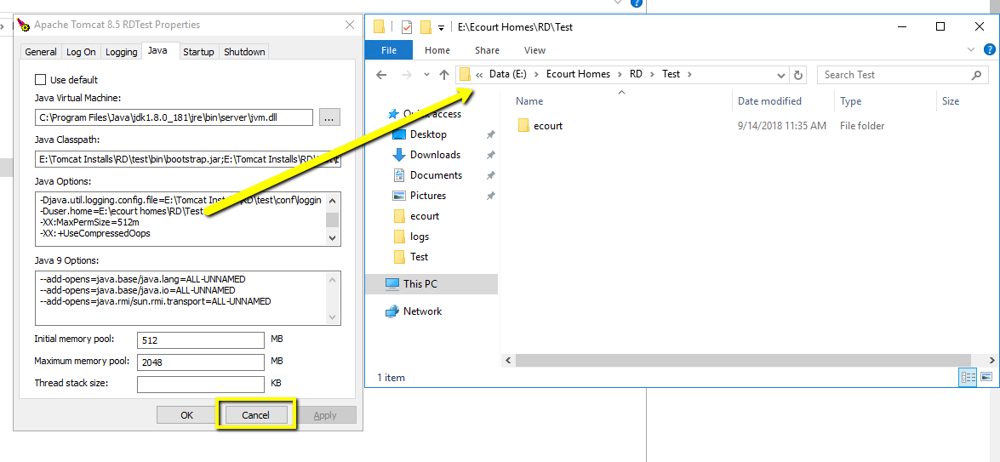Open the ecourt folder in the Duser home directory.
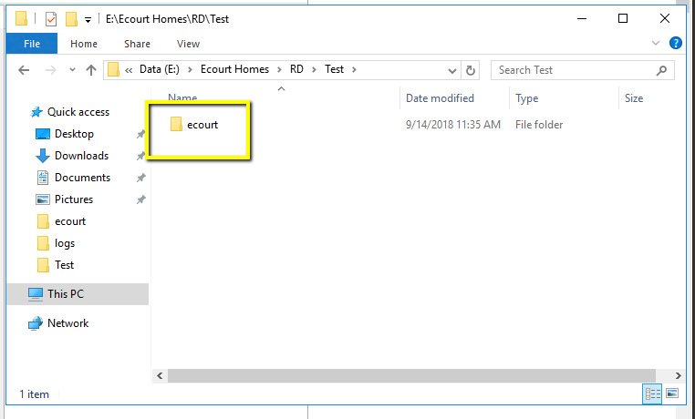Move the cache folders into an eCourtOldCache Folder. These should be anything other then a idm folder, an uploads folder, and anything with context or .properties in the file name
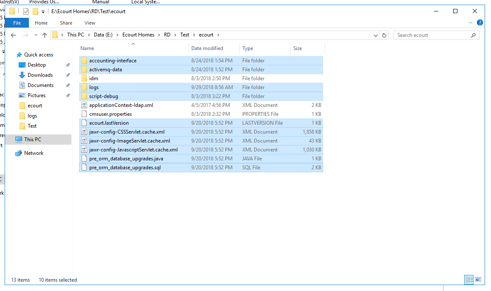Cut and paste the eCourtOldCache folder one level up from the ecourt folder (this should be the same directory as listed in the Duser.home setting)
Note: be sure that you CUT and paste, not copy and paste. Cutting will be significantly faster.
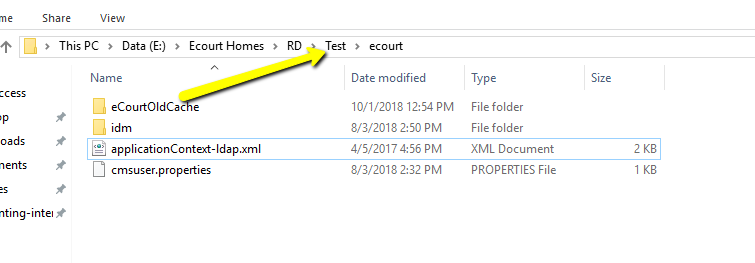 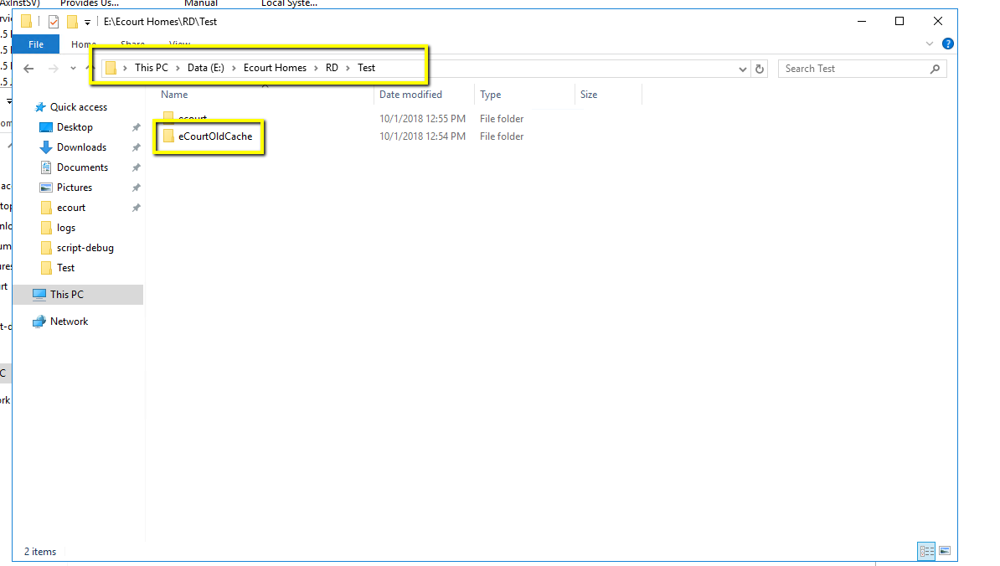Reopen the Apache Tomcat Home directory (the folder one level up from the bin folder we were working in earlier), and open the webapps folder
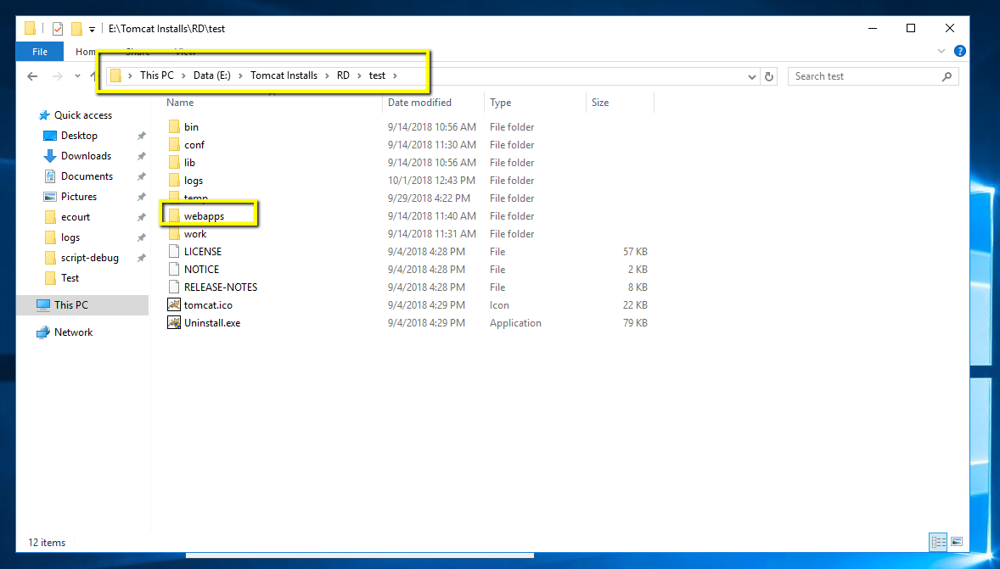delete the sustain directory, and move the sustain.war file to the desktop if there is one.
Note: This may be labeled something else, but it should be the name after the first / in the url. I.E. if the url is appServer:8080/ecourt, then the folder/war file will be named ecourt.
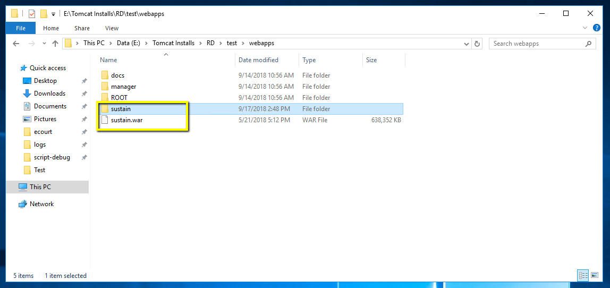 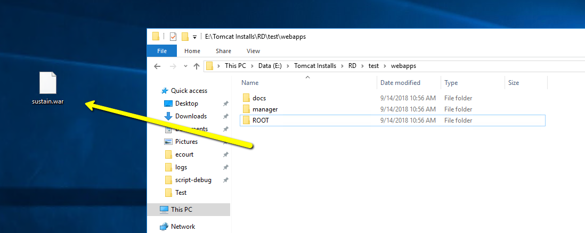Move the new war file from the desktop to the webapps folder, and rename it the same as the old.war file
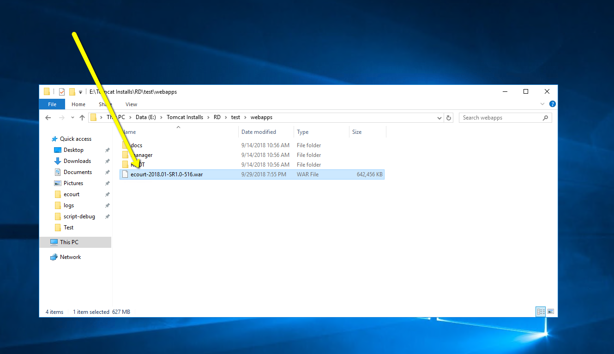 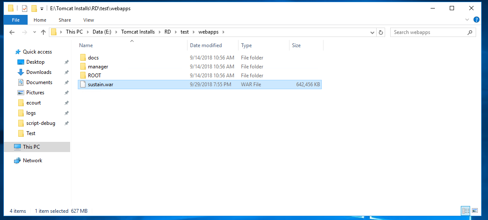Restart the service. You should see the folder created in the webapps directory, and then a logs folder appear with a sustain.log file in it in the Duser home directory.
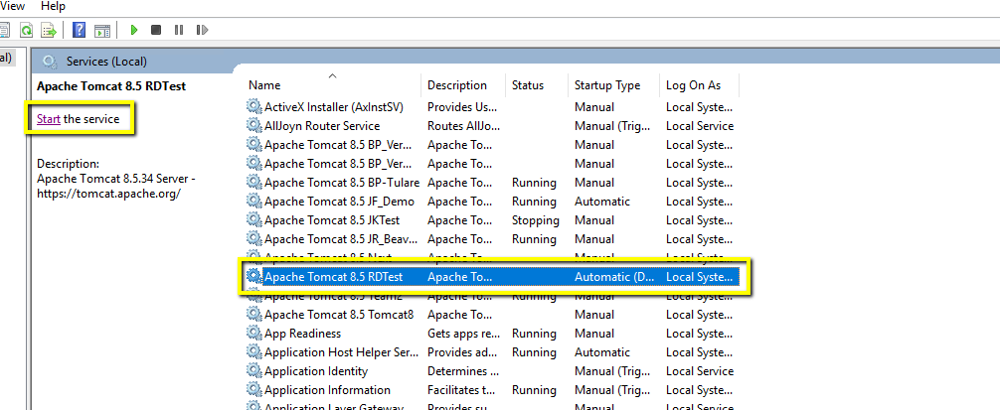 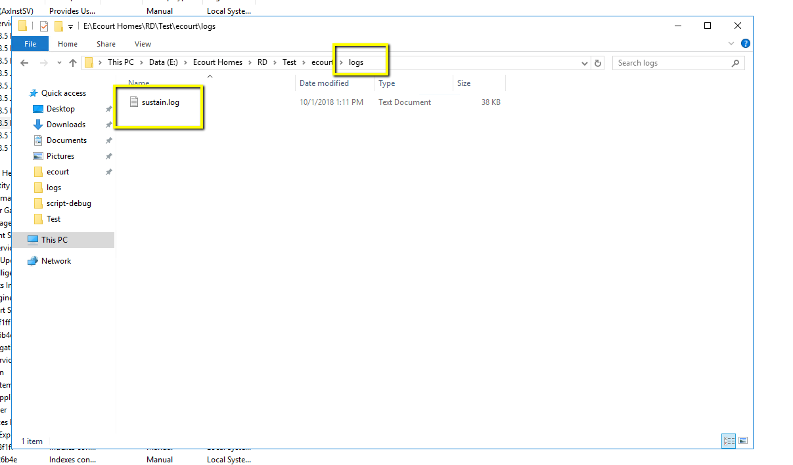Use your choice of software to monitor the log file and make sure the upgrade/startup processes don't fail. git bash is a good option, as well as notepad++ for this
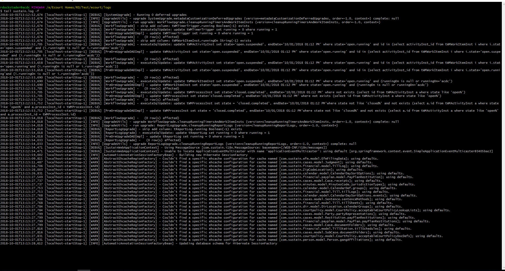If there are no errors for a few minutes, try to launch the app in a browser. You should get the login page, with the updated version.
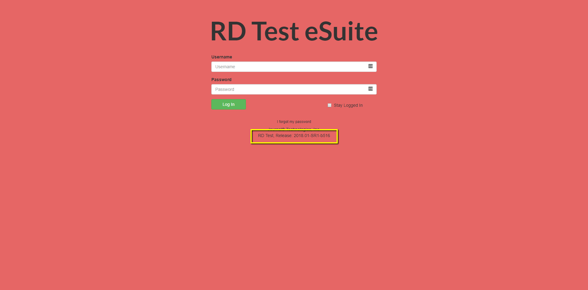Attempt to login, open a case, a person, and run some searches. If everything was a success, the upgrade worked and you can then delete the eCourtOldCache that we created earlier, as well as the old .war file. After the files are cleaned up, your upgrade is complete.